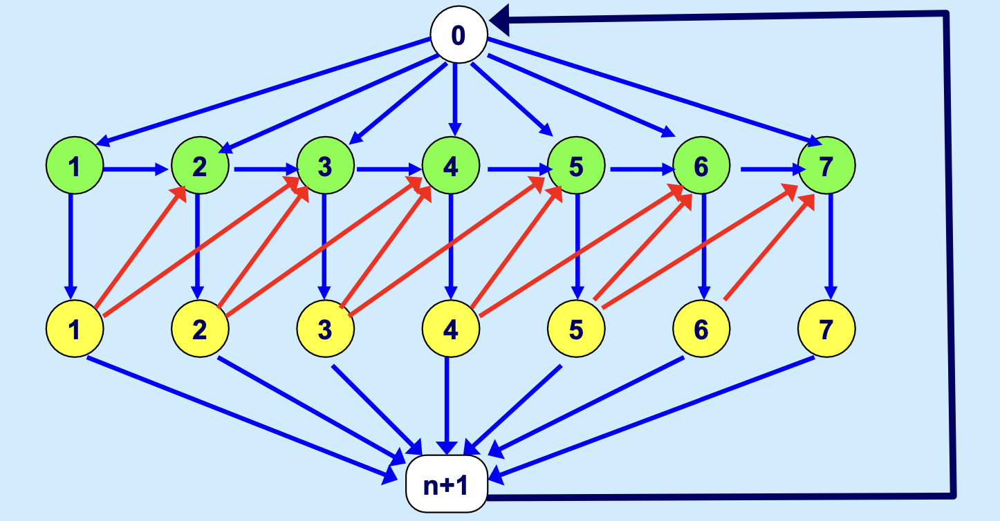

最小费用流：建模，拓展¶
最小费用流问题（Minimal Cost Flow Problem）在网络最优化问题中占有核心地位。可以表述如下：
给定图 \(G(V,E)\)，对每个节点 \(v_i\) 均给定实数 \(b_i\)， 如果 \(b_i > 0\)，那么称 \(b_i\) 为发点，可以供给资源，\(b_i\) 的值为该点的供给量。如果 \(b_i < 0\)，那么称 \(b_i\) 为收点，需要接收资源， \(-b_i\) 为该点的需求量。若 \(b_i = 0\)，那么称 \(b_i\) 为转运点。
对于每条边 \(e_j\)，给定实数 \(c_j\)，它是在边 \(e_j\) 上每单位流量的费用，称为费用系数。再给定正数 \(u_j\)，它是边 \(e_j\) 上流量的上界。
最小费用流的问题就是要确定每个边上的流量 \(x_j\)，使得不超过上界限制，并满足各个节点的供需要求，同时又使得总费用最小。对于网络，我们引入一个 \(m \times n\) 的矩阵 \(A\)。其中每个元素按照如下标准取值：
写成矩阵形式，如下：
即可表示如图的网络。
flowchart LR
1-- (1,2) --->2
1-- (1,3) --->3
1-- (1,5) --->5
2-- (2,3) --->3
2-- (2,4) --->4
3-- (3,4) --->4
5-- (5,3) --->3
5-- (5,4) --->4在前面介绍最短路问题的时候，我们也出现了这个矩阵，一般称之为节点-边关联矩阵（Node-edge incidence matrix）。
事实上，最小费用流模型可以视为一种基于边的建模方式。由于上述矩阵的列数 = 边数，所以假设我们的决策变量是针对每一条边而言的，那么关联矩阵乘决策向量，正好构成了约束条件的左端项，同时约束条件的个数也就对应了节点个数，可以用此刻画节点中的流量关系。以矩阵乘法形式给出就是：
节点-边关系矩阵
\(m \times n\) 的矩阵，行表示节点，列表示边。
对每一列而言，有且仅有一个1和一个-1，1表示从该节点出发，-1表示到该节点。0表示与该节点无关。
对每一行而言，可能有多个1和多个-1，因为一个节点可能有多条边出发/到达，1的个数，表示从该节点出发的边数（出度）；-1的个数，表示到达该节点的边数（入度）。
于是，我们给出最小费用流的数学模型：
其中，\(\mathbf{A}\) 就是节点-边关系矩阵，\(\mathbf{x}\) 是边的流量向量，长度等于边的数量； \(\mathbf{b}\) 是每个节点的供求向量，长度等于节点的数量。\(\mathbf{u}\) 是边的流量限制向量，限制每条边的流量大小。
对于约束 (1) 中的每一个约束，可以表示为：
实际上，左边就是：
（因为如果 \(a_{ij} = 0\)，就不会出现 \(x_j\) ）。
等式右边的第一个和式，对应的是所有从 \(v_j\) 离开的流量；第二个和式，对应所有汇入 \(v_j\) 的流量。
不失一般性，我们可以假设供求总是平衡的，也就是 \(\sum_{i \in V} b_i = 0\)，对于供大于求的图 (\(\sum_{i \in V} b_i > 0\))，可以设置一个虚拟节点，吸收全部的过剩供给量，从每个发点添加一个虚拟边到这个虚拟节点，这个虚拟边的费用是0。这样就转化为一个供求平衡的最小费用流问题。
最小费用流问题是网络流问题的重要基础，事实上，许多问题均可以被转化为这类问题，或者是最小费用流问题的一个特例。下面展开几个例子。
从最小费用流到运输问题¶
运输问题，具体的问题描述同样可以参考第三章。这里简要复习一下。
运输问题
给定一张图\(G(V,E)\)，所有节点分为供给节点和需求节点两类。各个供给节点之间没有边相连，各个需求节点之间也没有边相连，但是供给和需求节点之间可以相互抵达。以图论的概念表示，网络图就是一个Bipartite Graph（二分图，概念的具体解释见本笔记最后）。
- 问题:我们需要在事先给定运费和供给量的情况下，规划从不同供给节点到不同需求节点运送的货物量，使得总运输成本最小，同时还能满足所有需求节点的需求。
在第三章，我们已经给出了运输问题在供需平衡下的建模， 由于我们考虑的是不带转运的运输问题，因此建模如下：
这里的决策变量 \(x_{ij}\) 是基于节点的，表示从 \(i\) 地到 \(j\) 地的流量。我们同样可以基于最小费用流模型框架给出模型，差异在于，基于最小费用流模型的决策变量是基于边的。 \(y_{ij}\) 表示边 \((i,j) \in E\) 从 \(i\) 流到 \(j\)的流量。我们保持节点-边关系矩阵 (incidence-matrices)不变，作为系数矩阵， \(c_{ij}\) 表示边 \((i,j)\) 上的运输成本。所以可以给出等价模型：
这里的右端项 \(d_i\) 表示：运输问题下，节点 \(i\) 的需求情况。由于节点区分供给点和需求点，因此，有如下情形：
- 如果 \(i\) 是供给点，记该点的供给量为 \(a_i\)，则 \(d_i = a_i\)；
- 如果 \(i\) 是需求点，记该点的需求量为 \(b_i\)，则 \(d_i = -b_i\)。
事实上，基于此，我们也可以很容易地写出基于边的建模框架下，带转运的运输问题的模型。
解答
实际上，你只需要更改一下 \(d_i\) 的定义即可，除了收地、发地外，还要考虑中转地，中转地不存储货物，因此中转点的 \(d_i = 0\)，也就是流平衡约束。
从最小费用流到指派问题¶
指派问题可以视为运输问题的一个特例，实际背景是把 n 个活分配给 n 个人去做，每个人做不同工作有不同的时间，每个人都做一个工作，使得总时间最少。
上面已经写了最小费用流 -> 运输问题，只需要稍微修改就可以得到分配问题的建模。
限制每个节点的供给/需求量都是1，每个边上的流量只能为0或者1.
从最小费用流到最短路问题¶
从最小费用流模型也可以推导出最短路问题的建模。一句话概括一下最短路：
已知一个网络上各边长度，要求出从图上给定的节点 \(v_s\) 到 节点 \(v_t\) 的最短路径。
事实上，只需要把最小费用流的系数 \(c_{ij}\) 换成边 \((i,j)\) 的长度。令右端项中 \(b_s = 1, b_t = -1\)，其他 \(b_i = 0\)，就得到了最短路问题的模型。这其实就是限制了除了起点和终点外其他节点都视为转运点。各个边上的流量上界 \(u_{ij}\) 取 1。这样就得到了最短路问题的建模。这个建模可以参考第七章：最短路问题 .
从最小费用流到最大流问题¶
从最小费用流模型也可以推导出最大流问题的建模。一句话概括一下最大流：
已知一个网络上各边的流量上界，每个边的流量不得超过这个界限。要求出从图上给定的节点 \(v_s\) 到 节点 \(v_t\) 的最大流量。
看起来不怎么相关的问题，也可以转化为最小费用流进行计算。
flowchart LR
1-- (1,2,5) --->2
1-- (1,3,4) --->3
1-- (1,5,9) --->5
2-- (2,3,7) --->3
2-- (2,4,3) --->4
3-- (3,4,8) --->4
5-- (5,3,3) --->3
5-- (5,4,1) --->4
4-. (4,1) -.->1我们先令原来网络中所有边的费用系数向量 \(\mathbf{c} = \mathbf{0}\)，令供求向量 \(\mathbf{b} = \mathbf{0}\)。此时，我们添加一条虚拟边 \(e_{n+1}\)，从终止节点 \(v_t\) 通往 \(v_s\)。这条边上的流量没有上界限制，其费用系数为负数，设为 \(-1\)。
此时，求解包括这个虚拟边的新图的最小费用流问题。因为虚拟弧的边权（费用系数）是负数，所以当目标函数最小的时候，这条边上的流量也就达到最大了。同时，由于 \(\mathbf{b} = \mathbf{0}\),意味着所有节点的流入和流出的流量是相等的（包括起点和终点，与之不同的，最小费用流问题的起终点的流量不为0）。
上述建模方式，实际上是，虚拟边流入节点 \(v_s\) 的流量就要在原来的网络上以零费用返回节点 \(v_t\)，也就是说只要不超过各边的流通能力，从 \(v_s\) 到 \(v_t\) 的流量越大。
最小费用流问题的对偶¶
考虑最小费用流问题的原始线性规划形式：
其中节点‑边关联矩阵 \(A\) 隐含在第一个约束中。这是一个典型的线性规划：等式约束对应每个节点，变量有上界。
引入对偶变量：
- 对每个节点 \(i\) 的等式约束，引入节点势 \(\pi_i\)（无符号限制，因为等式约束对应自由变量）。
- 对每条边的上界约束 \(x_{ij} \le u_{ij}\)，引入非负对偶变量 \(w_{ij} \ge 0\)。
则对偶问题可写为：
- 第一个约束来自原始变量 \(x_{ij}\) 的系数。若边 \((i,j)\) 从 \(i\) 指向 \(j\)，则它在节点 \(i\) 的约束中系数为 \(+1\)，在节点 \(j\) 的约束中系数为 \(-1\)，因此对应对偶变量贡献为 \(\pi_i - \pi_j\)，再减去 \(w_{ij}\)
因为 \(x_{ij} \le u_{ij}\) 的约束方向是 \(\le\)，对偶变量取非负，在拉格朗日函数中会产生 \(-w_{ij}\) 项），最终形成 \(\pi_i - \pi_j - w_{ij} \le c_{ij}\)。
- 目标函数中，\(\sum b_i \pi_i\) 来自原始等式右端项，\(-\sum u_{ij} w_{ij}\) 来自上界约束的右端项（因为不等式方向是 \(x_{ij} \le u_{ij}\)，对偶后取负号）。
最大加权闭合子图 (Maximum Weight Closure)¶
给定有向图 \(G = (N, A)\)，其中每个节点 \(i \in N\) 有权重 \(w_i\)。
闭合子图（Closure）：子集 \(S \subseteq N\) 称为闭合子图，当且仅当：
即：没有弧从 \(S\) 指向 \(N \setminus S\)。
决策变量：
完整模型：
约束解释：
- \(y_i - y_j \leq 0\) 等价于 \(y_i \leq y_j\)，即：若选 \(i\)（\(y_i=1\)），则必选 \(j\)（\(y_j=1\)）
- 这恰好刻画了闭合子图的定义
最大权闭合子图问题可以转换为最小割问题（最大流问题的对偶）：
- 构造网络：
- 添加源点 \(s\) 和汇点 \(t\)
- 若 \(w_i > 0\)：添加弧 \((s, i)\)，容量为 \(w_i\)
- 若 \(w_i < 0\)：添加弧 \((i, t)\)，容量为 \(-w_i\)
-
原图弧 \((i,j) \in A\)：容量设为 \(+\infty\)
-
求解最小 \(s\)-\(t\) 割 \((S^*, T^*)\)
-
最大权闭合子图：\(S^* \setminus \{s\}\)
对着标准的最小费用流问题做一些特殊的设置：
- 所有费用 \(c_{ij} = 0\)（零费用）
- 源点 \(s\) 的供应 \(b_s = \sum_{w_i > 0} w_i\)
- 汇点 \(t\) 的需求 \(b_t = -\sum_{w_i > 0} w_i\)
- 其他节点 \(b_i = 0\)
- 弧容量按上述规则设置
此时，最小割的对偶问题恰好给出：
这与闭合子图约束 \(y_i - y_j \leq 0\) 形式一致（令 \(y_i = \pi_i\)）。
因此，最大权闭合子图 = 最小割 = 最大流的对偶，是最小费用流在零费用、特定供需下的特例。
最优性条件 (Optimality Conditions)¶
（作为一年后的更新，）这一章节补充如何求解（算法）、如何判断最优（最优性条件）以及经典建模案例（Caterer Problem）。注意，下面会用到一些常见术语比如 Residual Network. 它在实际含义上与神经网络的略有区别。
在最大流问题中，我们只关心残差网络中的容量；而在最小费用流中，我们必须同时关心残差网络中的费用。
对于当前的可行流 \(x\)，残差网络 \(G(x)\) 的定义如下：
- 前向弧 \((i, j)\)：若 \(x_{ij} < u_{ij}\)，则存在弧 \((i, j)\)。
- 残差容量：\(r_{ij} = u_{ij} - x_{ij}\)
- 费用：\(c_{ij}\)
- 后向弧 \((j, i)\)：若 \(x_{ij} > 0\)，则存在弧 \((j, i)\)。
- 残差容量：\(r_{ji} = x_{ij}\)
- 费用：\(-c_{ij}\) （注意：退回流量相当于减少成本，故费用为负）
定义弧 \((i, j)\) 的既约费用 (Reduced Cost) \(c_{ij}^\pi\) 为：
物理含义： * \(\pi_i\) 可以理解为节点 \(i\) 的“势能”或“标高”。 * \(c_{ij}^\pi\) 表示考虑了节点势能变化后的相对成本。 * 重要性质：任意有向圈 \(W\) 的既约费用之和等于原始费用之和。
定理 (最优性条件)：
可行流 \(x^*\) 是最优解，当且仅当 存在节点势向量 \(\pi^*\)，使得在残差网络 \(G(x^*)\) 中所有弧的既约费用非负：
与负圈的关系：
- 残差网络中存在负费用圈 (Negative Cost Cycle) \(\iff\) 当前流不是最优解。
- 消除负圈的过程，本质上就是调整流 \(x\) 和势 \(\pi\) 直到满足上述最优性条件。
通俗讲，最优性条件说的就是，要想最优，那么 残差网络里所有路的“相对成本”都不能为负。
为什么？如果有条路相对成本是负的，说明顺着走能“省钱”（就像发现了一个套利漏洞），那你肯定要继续运货来降低成本，直到这个漏洞被填满（容量耗尽）或消失。这对应算法中的“负圈消除”。
假设你消除了所有的套利漏洞，说明再也找不到更省钱的方案了，这就是最优解。简单来说，“无负圈”等价于“无路可走（指省钱的路）”。此时流量分配已达经济平衡，任何调整只会增加或不改变总费用，就像水已经流到了最低势能面，无法再自发流动。
互补松弛条件¶
设原始可行解 \(x^*\) 和对偶可行解 \((\pi^*, w^*)\) 分别为最优解，则它们满足：
我们这里用上述“既约成本”对互补松弛条件进行描述。
最优性条件（节点势形式）：
存在一组节点势 \(\pi_i\)，使得对于所有边 \((i,j) \in E\)，有：
- 若 \(0 < x_{ij}^* < u_{ij}\)，则 \(c_{ij}^\pi = 0\)；
- 若 \(x_{ij}^* = 0\)，则 \(c_{ij}^\pi \ge 0\)；
- 若 \(x_{ij}^* = u_{ij}\)，则 \(c_{ij}^\pi \le 0\)。
这个条件等价于在残差网络 \(G(x^*)\) 中所有弧的既约费用非负，也是负圈消除算法的理论基础。
对偶变量的直观理解
- \(\pi_i\) 可以理解为节点 \(i\) 的“势”或“影子价格”。若增加节点 \(i\) 的供给量（增大 \(b_i\)），目标函数值的增加率（边际成本）就是 \(\pi_i\)。
- \(w_{ij}\) 反映了边容量约束的松紧程度。若某边未达上限（\(x_{ij} < u_{ij}\)），由互补松弛知 \(w_{ij}=0\)；若边满载（\(x_{ij}=u_{ij}\)），则 \(w_{ij}\ge 0\) 可能为正，表示每增加一单位容量所能节省的费用。
求解算法：负圈算法 (Cycle Canceling Algorithm)¶
算法流程
- 寻找初始可行流：
- 忽略费用，仅满足容量和供需约束 \(Ax=b\)。
- 可通过构造辅助最大流问题求解（见下文）。
- 构建残差网络 \(G(x)\)。
- 检测负圈：
- 在 \(G(x)\) 中寻找总费用 \(< 0\) 的有向圈 \(W\)。
- 可使用 Bellman-Ford 或 SPFA 算法检测。
- 增广 (Augment)：
- 若找到负圈 \(W\)，计算瓶颈容量 \(\delta = \min \{r_{ij} : (i, j) \in W\}\)。
- 沿圈 \(W\) 推送 \(\delta\) 单位流量。
- 总费用减少 \(\delta \times |cost(W)|\)。
- 更新与终止：
- 更新残差网络。
- 若不存在负圈，则当前流为最优解。
最小费用流算法需要一个初始可行解。若直接寻找困难，可构造辅助问题：
- 添加超级源点 \(s^*\) 和超级汇点 \(t^*\)。
- 若 \(b_i > 0\) (供给)，添加弧 \((s^*, i)\)，容量 \(b_i\)，费用 \(0\)。
- 若 \(b_i < 0\) (需求)，添加弧 \((i, t^*)\)，容量 \(-b_i\)，费用 \(0\)。
- 添加弧 \((t^*, s^*)\)，容量 \(\infty\)，费用 \(-M\) (极大负值)。
- 求解该网络的最小费用流。若最优解中 \((t^*, s^*)\) 的流量等于总供给量，则原问题有可行解，且去掉辅助节点后的流即为初始可行流。
定理：若最小费用流问题中的所有容量 \(u_{ij}\) 和供需量 \(b_i\) 均为整数，则必然存在一个整数最优解。这意味着我们不需要使用复杂的整数规划方法，网络流算法自然能保证整数解（前提是数据整数）。
应用案例：The Caterer Problem (配餐员问题)¶
时间展开网络 (Time-Expanded Network) 建模的经典案例。它将动态决策转化为静态网络流。
问题描述
- 需求：连续 \(n\) 天，第 \(j\) 天需要 \(d_j\) 块干净餐巾。
- 来源：
- 购买新餐巾：费用 \(a\)。
- 快洗 (1-day)：当天脏，隔天干净，费用 \(c\)。
- 慢洗 (2-day)：当天脏，隔两天干净，费用 \(b\)。
- 目标：最小化总成本。
网络建模
为了用最小费用流求解，我们需要将“时间”和“状态”转化为节点。
- 节点设计：
| 节点 | 解释 |
|---|---|
| 节点 \(j\) | 代表第 \(j\) 天可用的干净餐巾 (Clean napkins on day \(j\)) |
| 节点 \(j'\) | 代表第 \(j\) 天用完的脏餐巾 (Dirty napkins on day \(j\)) |
| 节点 \(0\) | 餐巾来源 (购买新餐巾) |
| 节点 \(n+1\) | 餐巾归宿 (不再清洗的脏餐巾) |
- 弧与费用设计：
- 购买：弧 \((0, j)\)，费用 \(a\)，容量 \(\infty\)。
- 使用 (满足需求)：弧 \((j, j')\)，费用 \(0\)，流量固定为 \(d_j\) (可通过设置上下界均为 \(d_j\) 实现)。
- 清洗 (核心逻辑)：
- 弧 \((j', j+1)\)：1 天快洗，费用 \(c\)。
- 弧 \((j', j+2)\)：2 天慢洗，费用 \(b\)。
- 库存：弧 \((j, j+1)\)，干净餐巾留到明天，费用 \(0\) (或存储费)。
- 丢弃：弧 \((j', n+1)\)，脏餐巾不再清洗，费用 \(0\)。
- 循环流：添加弧 \((n+1, 0)\)，费用 \(0\)，使网络形成循环流 (Circulation)，便于求解。

这就能构成一个对应关系表，映射到最小费用流上：
| 最小费用流要素 | 在配餐员问题网络中的对应 | 说明 |
|---|---|---|
| 节点 | 每一天的两种状态节点（\(j\) 干净，\(j'\) 脏），外加虚拟源点 \(0\) 和汇点 \(n+1\) | 节点代表了“时间点”和“物品状态”的组合，这是时间展开网络的核心。 |
| 边 | 购买、使用、清洗（快/慢）、库存、丢弃、循环边 | 每一条边都代表一种可能的“操作”或“状态转移”，并带有相应的成本。 |
| 流量 \(x_{ij}\) | 每条边上的餐巾数量。例如，边 \((j, j')\) 上的流量就是第 \(j\) 天使用的餐巾数，必须等于 \(d_j\)。 | 流量是决策变量，代表了在各个操作间流转的餐巾数量。 |
| 费用 \(c_{ij}\) | 每条边对应的单位成本：购买费 \(a\)，快洗费 \(c\)，慢洗费 \(b\)，其余为 \(0\)。 | 与最小费用流的目标——最小化总成本——完全一致。 |
| 节点供需 \(b_i\) | 此处体现为流量守恒。大部分节点是转运点（\(b_i=0\)），整个网络通过循环弧形成一个循环流。 | 这是最小费用流中“ Circulation ”问题的一个特例，即所有节点净流量为0。 |
- 建模意义： 这个问题展示了如何将多阶段决策问题转化为静态网络流问题。通过增加节点维度（时间 + 状态），将复杂的决策（洗还是不洗？快洗还是慢洗？）转化为网络上的路径选择。